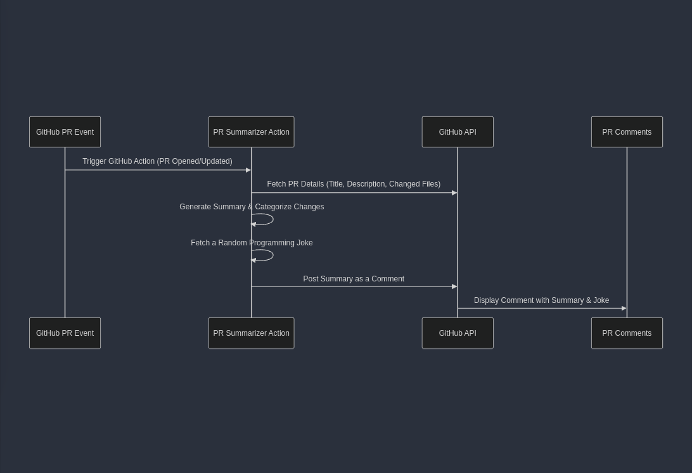

adorsys
1. Introduction
Title:
PR Summarizer with GitHub Actions
Purpose:
Automates PR reviews by generating a concise summary.
Provides a structured overview of file changes.
Adds a fun, programming-related joke to PRs.
Use Case:
Saves time for reviewers by reducing manual analysis.
Ideal for large teams working on multiple PRs daily.
2. Language of Choice: Rust 🦀
Why Rust?
Memory safety without a garbage collector.
High performance and reliability.
Strong async programming support.
Thriving open-source community.
Used For:
System programming.
Web applications.
Embedded systems.
3. Architecture Overview
Core Components:
GitHub Integration:
Handles API interactions.
Summarization:
Extracts key points from PRs.
Joke Fetcher:
Fetches a random programming joke.
Utility Functions:
Reads GitHub event payloads.
Main Entry Point:
Runs the summarization flow.
4. Workflow Diagram
Visual representation of the PR Summarizer process:

5. Live Demo
✅ Open a GitHub PR on a test repository.
✅ Run the PR Summarizer (manual trigger if needed).
✅ View the generated summary + joke in PR comments.
✅ Explain how the bot analyzes file changes & PR descriptions.
6. Conclusion & Q&A
Benefits:
Automates PR reviews.
Enhances team productivity.
Makes code reviews engaging.
Future Enhancements:
Use AI for better summary quality.
Customize jokes or add motivational messages.
Extend support for multiple repositories.
Previous
Next